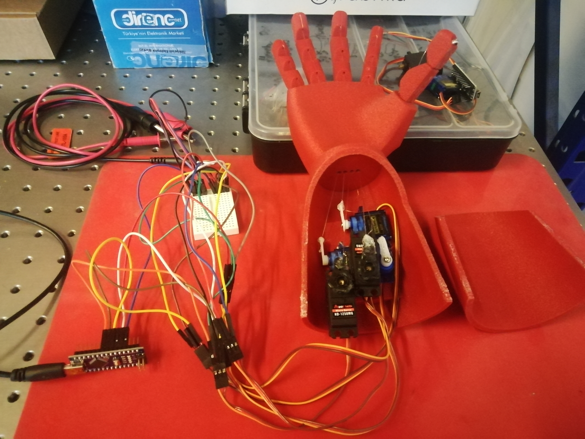
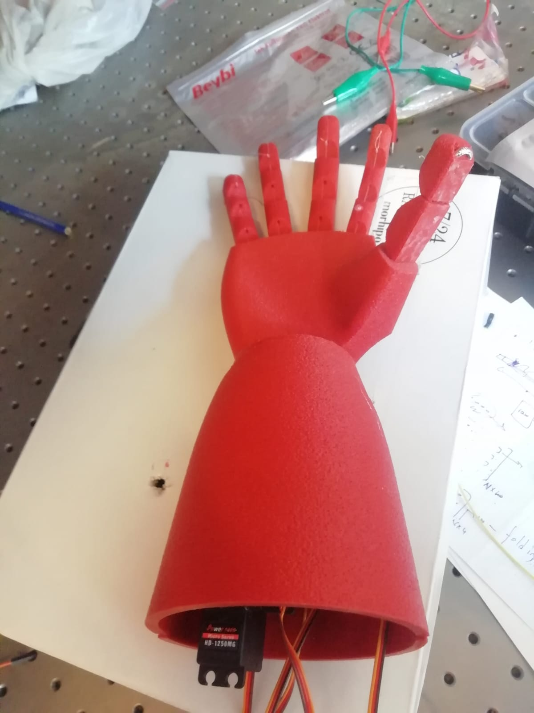

EMG-Controlled Prosthetic Arm
Classifying hand gestures from electromyography signals to drive real-time individual finger control on a 3D-printed prosthetic arm.
ahmettamer / EMG-Prosthetic-Hand View on GitHubOverview
The goal of this project was to build an artificial arm that responds to hand gestures decoded from EMG (electromyography) signals. The system captures muscle electrical activity through surface electrodes, processes and classifies the signals using machine learning and deep learning, then sends commands to servo motors that actuate each individual finger of a 3D-printed arm. The project was carried out during an internship at MTM Biotech, using their proprietary MTM chip card for EMG acquisition.
System Architecture
Gallery




Demo Videos
Hardware
- MTM chip card — EMG/EEG acquisition board developed by MTM Biotech, connected via Bluetooth; sampling rate ~3,500 Hz.
- Arduino Uno — Receives classified gesture labels over serial (COM9) and maps them to servo PWM signals.
- 5 servo motors — One per finger, actuated by bait rope tensioned against elastic return bands.
- 3D-printed arm — Custom-designed hand with rope-routed finger tendons.
Dataset
Three separate datasets were collected to train and validate the models:
- 100-subject dataset — Each subject performed 5 individual finger movements (thumb → little finger), 5 repetitions, recorded for ~8 seconds each at 3,500 Hz. After correcting a data-accumulation bug in the acquisition software, the last 40,000 data points per CSV were extracted, yielding a matrix of 1,938 signal rows.
- Personal hand-gesture dataset — 44 signals per finger (5 classes) plus 44 noise signals = 264 signals total, captured under controlled conditions with the program restarted between recordings.
- Fist + thumb-index dataset — 5 subjects performing a fist and a thumb–index pinch, 10 seconds each at 3,500 Hz. Used for secondary validation.
Signal Processing Pipeline
- Band-pass filtering — Multiple bands (20–100 Hz, 100–200 Hz … up to 500 Hz) applied to reject noise outside the physiological EMG range.
- Low-pass filtering — Additional low-pass filters at 3, 10, 20, 30, 40, and 50 Hz applied to the personal dataset for fine-grained feature comparison.
- Signal segmentation — A sliding FFT-energy window (3,000 points, step = 1) was used to extract the highest-energy movement epochs and discard quiet intervals.
- Wavelet transformation — Applied to capture joint time–frequency information; the resulting power spectra (scale 0–512, EMG basis 5–200 Hz) formed an additional feature channel.
Feature Extraction
22 time-domain, frequency-domain, and time-frequency features were computed per signal window. The most impactful included:
- MAV, RMS, VAR, SSI — amplitude & energy
- Zero Crossing Rate (ZCR)
- Waveform Length (WL)
- Slope Sign Change (SSC)
- Williams Amplitude (WAMP)
- IASD, IATD — derivative-based noise filters
- IEAV, IALV, IE — exponential/log amplification
- DAMV, DVARV, DASDV — difference statistics
- FFT & Power Spectral Density
- Wavelet transform coefficients
Automatic feature selection (highest-score 4 features) identified the SSI features of 3 Hz, 30 Hz, 40 Hz and 50 Hz bands as most discriminative, achieving 73% KNN accuracy on its own.
Results
| Model | Data | Accuracy | Precision | F1 |
|---|---|---|---|---|
| Decision Tree | Raw + All filtered | 82 % | 81.5 % | 82.3 % |
| Random Forest | Raw + All filtered | 82.3 % | 83.7 % | 82.2 % |
| KNN | Raw + All filtered | 81 % | 84 % | 82 % |
| Naïve Bayes | 3 Hz LP — MAV | 64 % | — | — |
| Decision Tree | 100-subject | 20 % | — | — |
The low accuracy on the 100-subject dataset is attributed to signal-extraction artefacts from the FFT windowing code; the personal hand-gesture dataset with all 33 features consistently performed best.
Challenges & Solutions
The acquisition software appended data across sessions without resetting. Solved by assuming a fixed ~40,000 data-point budget per subject and extracting the last 40,000 points from each CSV.
Thick skin attenuated EMG signals below noise floor for some subjects. Mitigated by standardising electrode placement, instructing subjects to press firmly, and collecting noise-only baseline windows.
Initial assumption of 1,700 Hz was incorrect; confirmed 3,500 Hz by a 10-second capture test (35,000 points, verified ×3). All filters were re-applied with the corrected Nyquist frequency.
Conclusion
The project demonstrated a full end-to-end pipeline from raw EMG acquisition to real-time servo actuation. Combining all raw and band-pass-filtered features into a single 33-feature vector fed into a Random Forest or Decision Tree classifier yielded the strongest results (~82%). The prototype confirms the viability of low-cost EMG-based prosthetic control and establishes a foundation for future improvements: larger multi-subject datasets, CNN-based raw signal classifiers, and user-adaptive calibration.